INTERNATIONAL CASE STUDY: SUPERKILEN PARK
Urban transformation is the city’s physical ability to adapt and transform according to the changing social dynamics and current demands within the city and the world. In the case of Superkilen, the district Nørrebro had experienced the largest riots in Denmark since the 1980s stemming from its ethnically diverse population. These riots resulted in unwanted media attention to the area and isolated the neighbourhood from other districts in Copenhagen. Increasing crime and violence rates followed and were a catalyst for urban transformation. The transformation focused on 'integration' and 'coexistence' and identified both the individual needs of the geographical space and the inhabitants that reside there, and the potential future growth of the city.
Superkilen is located in Nørrebro district in Copenhagen, Denmark.
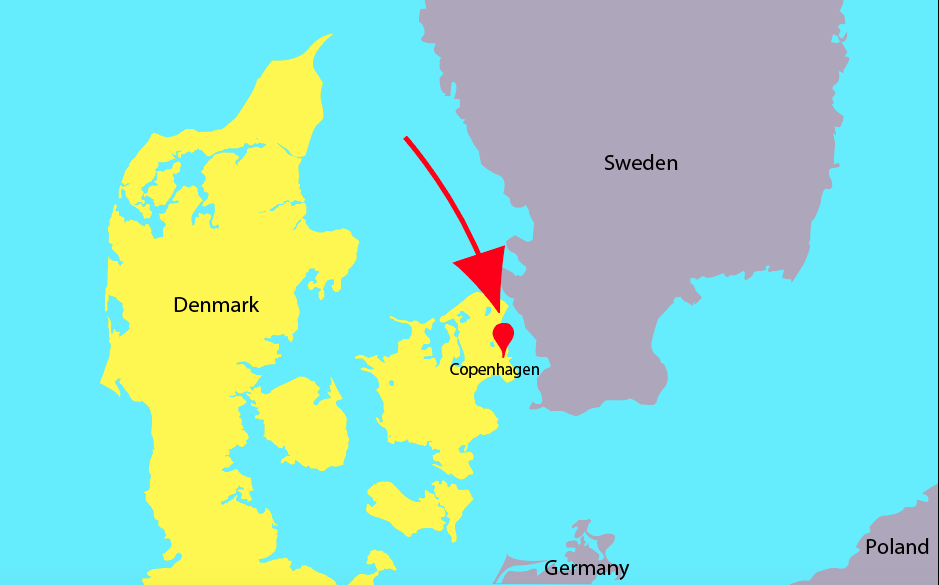Image source: Google Maps screenshot traced over on Adobe Illustrator
KEY CHANGE 1 – “A DISMANTLED TRAIN TRACK”
Before Superkilen, the strip of land was a former railway track that was later dismantled and used as a bike trail to cut through the neighbourhood. Two major roads – Nørrebrogade and Tagensvejdues – were located at the north and south end of unused strip. These main roads were busy and active ‘hang out’ spots dispersed with shops and cafes. In 2008, eight million euros was offered up by the Copenhagen City Council and Realdania to the best design to transform the unused strip of land into a park. Bjarke Ingels Group (BIG), Topotek 1 and Superflex joined together and their design was selected due to its original ideas on “user involvement” and “visual design” (MAS Context, 2018). Their design was comprised of three sections - the Red Square, the Black Market and the Green Park - that area all connected to each other in one long strip that stretches one kilometre long. These three sections were identifiable by colour – red, black and green – but like much of the inhabitants in the area were connected together. This urban transformation forced people to interact and with one another and their surrounding environment.
KEY CHANGE 2 –“ETHNICALLY DIVERSE NEIGHBOURHOOD”
71,891 people live in Norrebro, a small 3.82km squared district that is home to more than 60 cultural ethnicities. Superkilen was based on ‘extreme participation’ due to its diverse and large population. Local’s participation in the project was so important to this urban transformation as one of the main problems in the area was the lack of community and unity between its citizens. Superflex, one of the three teams that designed Superkilen, specifically included the locals in the design process. Locals’ perspectives and opinions were important so that they could see a part of themselves in the urbanised area as well. The most evident representation of this can be seen in the 108 objects scattered around Superkilen that represent different places around the world. Most of the objects were proposed by the locals and were imported into Superkilen or copied as an exact replica and brought into the park. All these objects make it seem like Superkilen is a small world exhibit. The urban transformation has given the community a space that celebrates multiculturalism. It is an area where people can interact and socialise and offers the future a potentially more united environment. The objects in particular help inhabitants to feel closer to home and reconnect with their country of origin which they are no longer living in. The Red Square contains a: “Jamaican sound system”, “Japanese cherry tree”, “Norway maple tree”, “Thai boxing ring”, “Indonesian swing”, etc (Public Space, 2012 The Black Market contains a: “Moroccan fountain”, “Japanese playground (in the shape of a)…giant calamari”, “Brazilian phone boxes”, “Rumanian chess tablets”, etc (Public Space, 2012) The Green Park contains: “Swiss hammocks”, “German picnic tabets”, “Spanish ping-pong tablets”, Palestine soil, “an American three-dimensional donut”, etc (Public Space, 2012)
KEY CHANGE 3 –“LOCATION”
Superkilen is a long thin strip of land surrounded by key urban ‘hang outs’. It also contains a bike path connecting all three sections together. The Red Square consists of bright red, orange and pink concrete floor. Used mainly for sport as the strip has basketball rings and is not car accessible. However, it is surrounded by two main roads – Mimersgade and Nørrebrogade – on its north and south side. It is close to: -- Close to Nørrebro Station -- Close to Nørrebro Bibliotek library -- Close to Nørrebro Bibliotek (rock climbing gym) -- Close to Hillerødgade Bad and Hal (public swimming pool) -- Close to Nørrebroparken (playground) -- Close to Nørrebroruten (the 'Green Path'). Nørrebroruten is a popular bike path that runs through the centre of Nørrebro and briefly runs through Superkilen
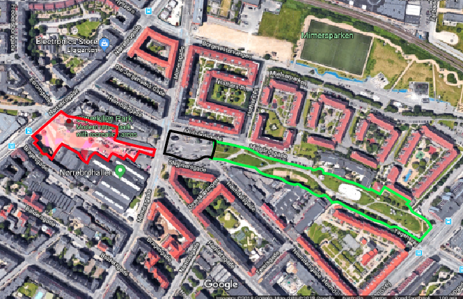 Image source: Google maps screenshot edited on Adobe illustrator
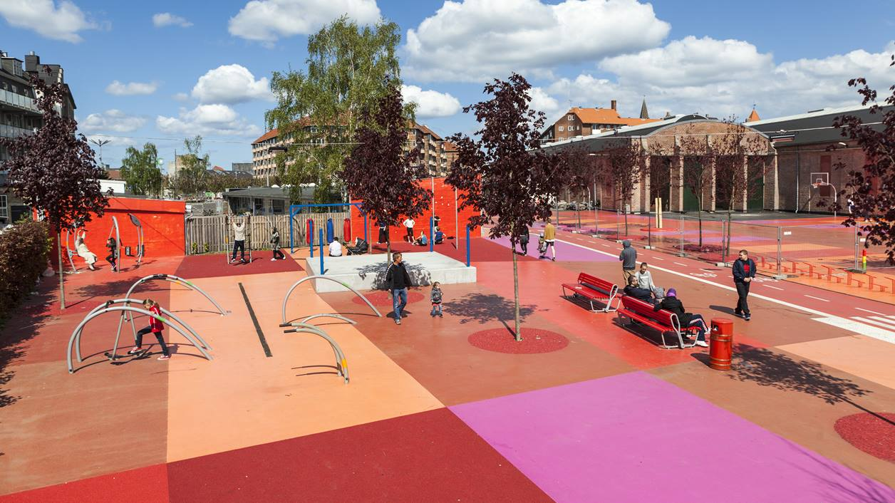
Image source: https://realdania.dk/projekter/superkilen/nyheder/den-roede-plads-faar-ny-belaegning-i-2018_13062017
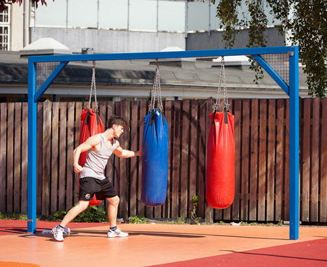
Image source: https://www.dezeen.com/2012/10/24/superkilen-park-by-big-topotek1-and-superflex/
The Black Market is an area visually identifiable by the strips of white lines on the concrete strip. This is a more relaxed area filled with a large fountain and a series of benches. It is the most accessible area of the whole park as it is connected to a series of back roads. It is an area where people can gather to have a bbq, play chess or meet up.
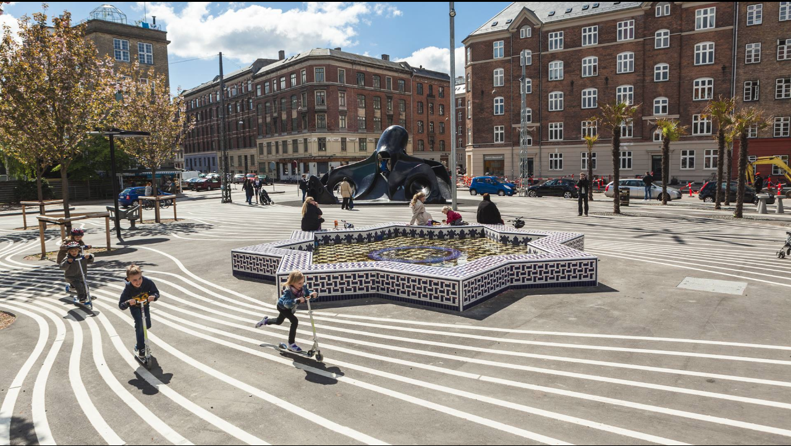Image source: http://realdania.dk/projekter/superkilen#
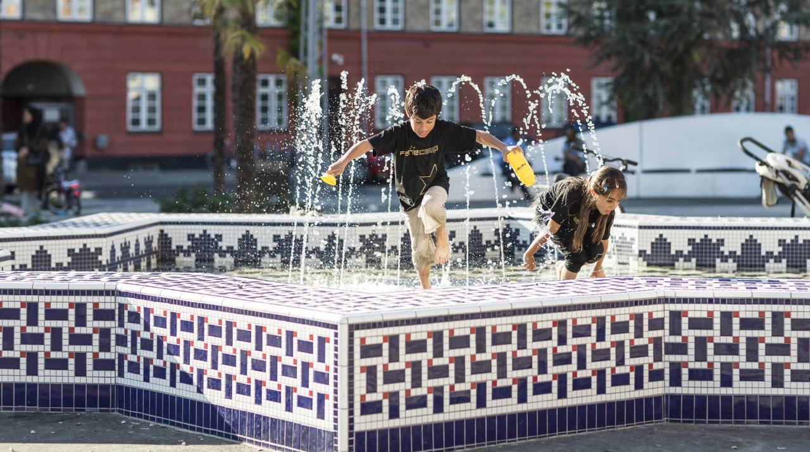
Image source: http://realdania.dk/projekter/superkilen#
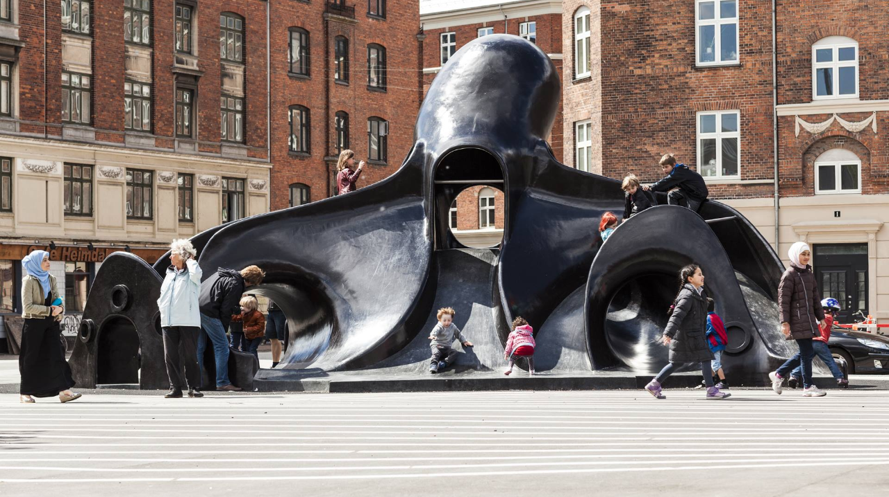
Image source: http://realdania.dk/projekter/superkilen#
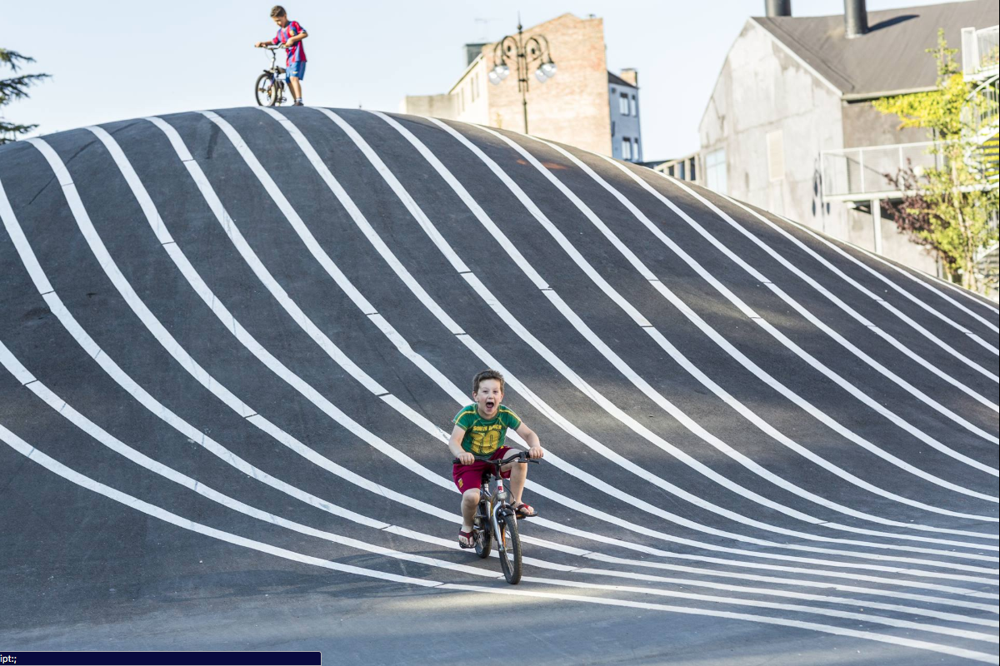
Image source: http://realdania.dk/projekter/superkilen#
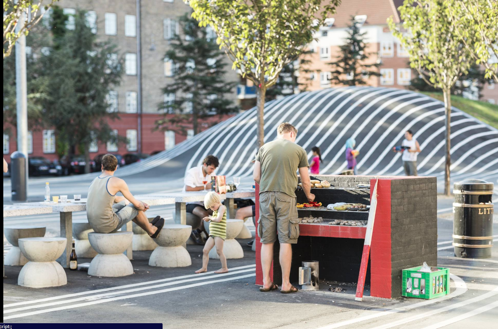
Image source: http://realdania.dk/projekter/superkilen#
The Green Park is a traditional park filled with a lot of greenery and stops at Tagensvejdues Street. It is close to: -- Bispebjerg station
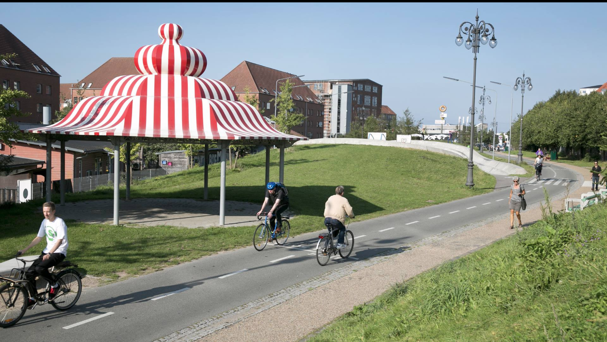Image source: http://realdania.dk/projekter/superkilen#
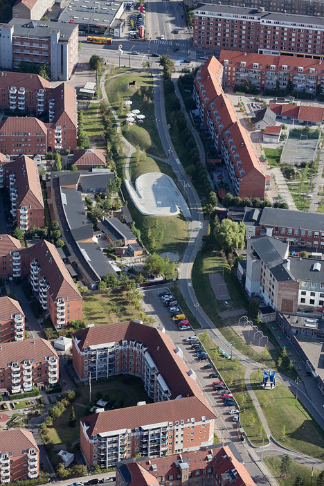
Image source: https://www.dezeen.com/2012/10/24/superkilen-park-by-big-topotek1-and-superflex/
SUCCESS OR FAILURE?
The project finished in 2012 and cost just under eight million euros (7,700,000 €). Superkilen park has been nicknamed “Europe’s strangest public park” (CNN Travel, 2018) by CNN Travel. It has increased tourism in already highly populated area and led to “Ghetto Tours”. Citizens in Norrebro district show tourists around the area in the hope they can promote a positive identity for Norrebro district. The housing blocks to the Green Park are a popular location on these tours as they are commonly associated with ghettos due to the high number of people living there. However, the innovative design of Superkilen is used as an instrument to change people’s perception to the ghettos. The innovative design of Superkilen makes it a successful urban transformation. As its non-traditional and gives possibilities to other cities with a diverse ethnic population. It has become a well-known multicultural neighbourhood and its once negative reputation has transformed into a positive, touristy area. However we must explore and do more research into the effect of countries visual representation on its inhabitants in Norrebro district. A lot of the objects in Superkilen park, such as the Thai boxing ring or the red mural to commemorate past Chilean leader Salvador Allende represent a whole country in one simple, stereotypical object. Despite, the fact that these objects were mainly chosen by locals, no one has studied the effect on what branding these nationalities have on individual’s identity.